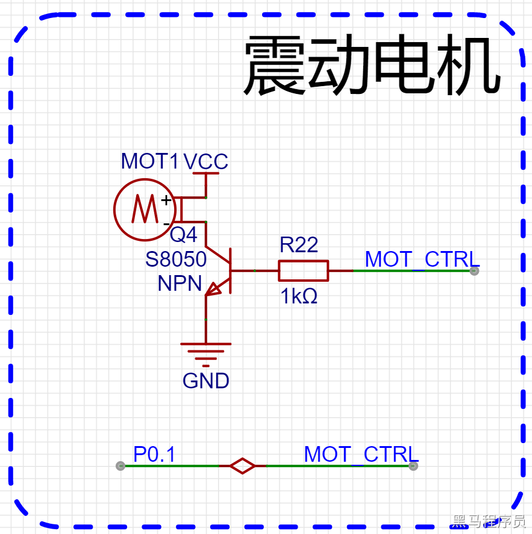
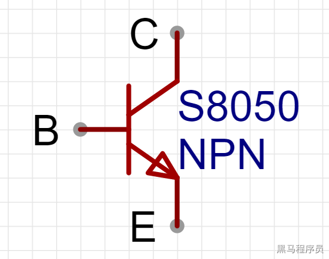

<!DOCTYPE lake>
<h2 data-lake-id="YcE58" id="YcE58"><span data-lake-id="u1a93570c" id="u1a93570c">学习目标</span></h2><ol list="ua9227b64"><li data-lake-id="ub77ded13" fid="u6dc5d2a4" id="ub77ded13"><span data-lake-id="uea360b1e" id="uea360b1e">控制马达震动</span></li></ol><h2 data-lake-id="mEPZj" id="mEPZj"><span data-lake-id="u8929ebda" id="u8929ebda">学习内容</span></h2><h3 data-lake-id="PcYsQ" id="PcYsQ"><span data-lake-id="ube0e4c3d" id="ube0e4c3d">原理图</span></h3><p data-lake-id="u28db6c85" id="u28db6c85"></p><h3 data-lake-id="EdsQk" id="EdsQk"><span data-lake-id="ubb058027" id="ubb058027">控制分析</span></h3><h4 data-lake-id="jttZa" id="jttZa"><span data-lake-id="ufe2fe7c1" id="ufe2fe7c1">S8050 NPN三极管特性</span></h4><p data-lake-id="u206ca066" id="u206ca066"><span data-lake-id="u970cb3e2" id="u970cb3e2">NPN型三极管的工作原理是基于PN结和PNP型晶体管的工作原理。</span></p><p data-lake-id="u4fd4406f" id="u4fd4406f"><span data-lake-id="ufb8bdc29" id="ufb8bdc29">当外加正向电压时，发射区的P型半导体被注入少量的N型载流子（电子），这些电子被加速并向基区移动。在基区，电子与空穴结合，从而减少了空穴的浓度。当基区浓度低于发射区浓度时，电子会进一步扩散到集电区，导致集电区产生电流。</span></p><p data-lake-id="u17aa6059" id="u17aa6059"><span data-lake-id="u27eff6f7" id="u27eff6f7">当外加反向电压时，PN结会被反向偏置。此时，电子和空穴被吸引到PN结中心，从而阻止了电流的流动。</span></p><p data-lake-id="u379d45fc" id="u379d45fc"></p><p data-lake-id="u94a6b4c6" id="u94a6b4c6"><span data-lake-id="ub3f59738" id="ub3f59738">B: base,  基极。（理解：基于/根据 这个条件做什么事情）</span></p><p data-lake-id="u817beafb" id="u817beafb"><span data-lake-id="u6209120a" id="u6209120a">E: emitter, 发射极。（理解：发射端，入口）</span></p><p data-lake-id="uf4260d2d" id="uf4260d2d"><span data-lake-id="u2fe4f558" id="u2fe4f558">C: collector, 集电极。（理解：收集电的区域，用电的器件在这个区域）</span></p><p data-lake-id="u9c2b541e" id="u9c2b541e"><span data-lake-id="u97975931" id="u97975931">NPN型三极管，C极为输入端，E极为输出端，B极为控制端</span></p><p data-lake-id="u1b2df6a3" id="u1b2df6a3"><strong><span data-lake-id="uffe1d669" id="uffe1d669">B极 为高电平时，C极到E极的电路导通。</span></strong></p><p data-lake-id="u5491e856" id="u5491e856"><strong><span data-lake-id="ub81367a0" id="ub81367a0">B极 为低电平时，E极到C极的电路断开。</span></strong></p><h4 data-lake-id="idGV3" id="idGV3"><span data-lake-id="ud4e5ff58" id="ud4e5ff58">震动控制</span></h4><p data-lake-id="u09082923" id="u09082923"><span data-lake-id="u99696325" id="u99696325">通过</span><code data-lake-id="u48ce1323" id="u48ce1323"><span data-lake-id="u187acf33" id="u187acf33">P0.1</span></code><span data-lake-id="ud3945d18" id="ud3945d18">引脚控制马达震动。</span></p><p data-lake-id="ub95aa4cc" id="ub95aa4cc"><br/></p><h3 data-lake-id="hb0Ro" id="hb0Ro"><span data-lake-id="u341a6fc8" id="u341a6fc8">功能设计</span></h3><p data-lake-id="u75942dc2" id="u75942dc2"><span data-lake-id="ubfc5138c" id="ubfc5138c">实现震动马达的震动。</span></p><span class="yuque-card-unsupported">[codeblock]</span><p data-lake-id="u01d93fdc" id="u01d93fdc"><span data-lake-id="ufd8f1cd1" id="ufd8f1cd1">实现的是1秒钟控制一次马达震动。</span></p><p data-lake-id="u45708e62" id="u45708e62"><span data-lake-id="uce6f1009" id="uce6f1009">​</span><br/></p><h2 data-lake-id="ih3in" id="ih3in"><span data-lake-id="u9aa63a63" id="u9aa63a63">练习题</span></h2><ol list="u95beda30"><li data-lake-id="u0b7ea4c9" fid="u090afbe0" id="u0b7ea4c9"><span data-lake-id="ue743a2ba" id="ue743a2ba">实现震动马达震动</span></li><li data-lake-id="u4d8caa71" fid="u090afbe0" id="u4d8caa71"><span data-lake-id="ue9b6b132" id="ue9b6b132">通过串口控制马达的震动和停止</span></li></ol>